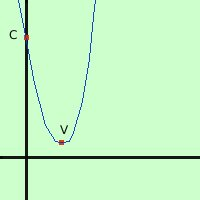

|
Rappresentare graficamente la parabola di equazione y = x2 - 6x + 10 1) Troviamo le coordinate del vertice abbiamo a = 1 b = -6 c = 10 Calcoliamo la coordinata x del vertice: Vx
Calcoliamo la coordinata y del vertice: Vy
V = (3; 1) 2) troviamo l'intersezione C con l'asse y teoricamente dovremmo fare il sistema fra l'asse y (equazione x=0) e la parabola; pero' e' sufficiente prendere come prima coordinata 0 e come seconda coordinata il termine noto della parabola C = (0; 10) 3) troviamo le intersezioni con l'asse x, se esistono Devo fare il sistema fra la parabola e l'equazione dell'asse x (y=0) y = 0 sostituisco y = 0  Risolvendo calcoli l'equazione di secondo grado otteniamo che il termine sotto radice e' negativo quindi la parabola non taglia l'asse x ma e' tutta sopra o tutta sotto l'asse Ora devo mettere i punti in un sistema di assi cartesiani e tracciarne la congiungente ricordando che il vertice e' sempre il punto di massimo o di minimo della curva (vuol dire che sul vertice devo fare la conca) Nota: di solito basta il vertice ed un altro punto per disegnare la parabola, comunque, se ne hai bisogno, puoi trovare altri punti per cui passa la parabola sostituendo un qualunque valore ad x e controllando che valore ottieni per y; Ad esempio nella nostra parabola se metto x=2 ottengo y = 22 - 6(2) + 10 = 4 - 12 + 10 = 2 la parabola passa per il punto (2,2) se metto x=5 ottengo y = 52 - 6(5) + 10 = 25 - 30 + 10 = 5 la parabola passa per il punto (5,5) |